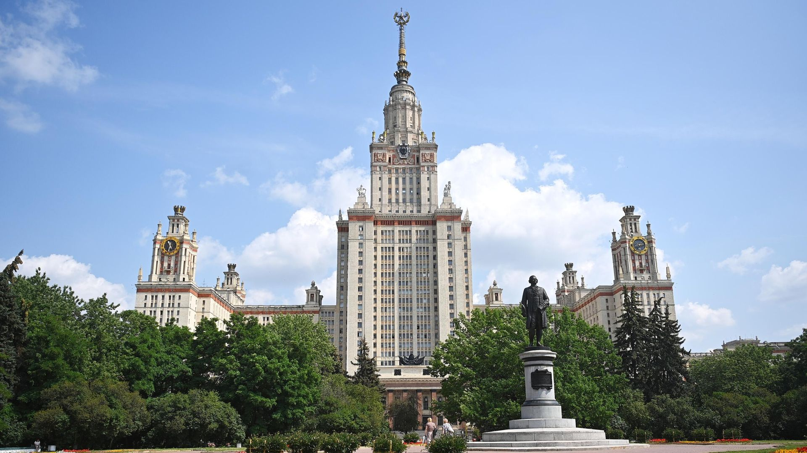
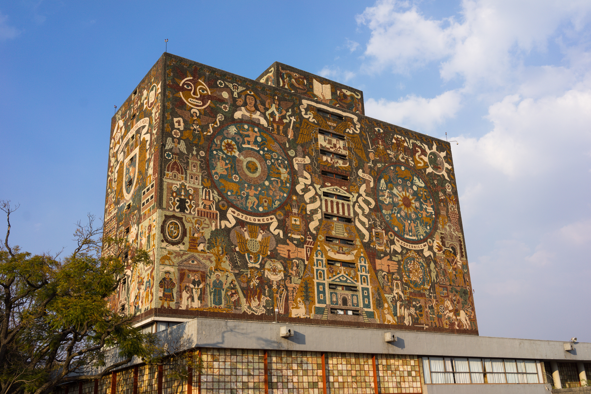

ДВФУ
Федеральный
университет во
Владивостоке, основан в 2011 году в
результате объединения четырёх вузов: ДВГУ, ТГЭУ, ДВГТУ (все три — Владивосток) и УГПИ
(Уссурийск).
Подробнее»
Национальный автономный университет Мексики
Государственное учебное заведение, расположенное, большей частью, в
Мехико, считающееся
крупнейшим по числу студентов
университет в Северной и Южной Америке.
Подробнее»
MIT
Частный исследовательский университет в Кембридже, США. Основан в 1861
году.
Известен инженерными, физическими и
IT-направлениями, а также множеством научных открытий и стартапов.
Оксфорд
Старейший университет англоязычного мира, расположен в Оксфорде,
Великобритания. Обучение там ведётся примерно с 1096
года. Состоит из десятков колледжей, каждый со своими традициями.
МГУ
Крупнейший и старейший классический университет России, основан в 1755
году в
Москве. Главное здание на Воробьёвых
горах, построенное в 1953 году.
Seoul National University
Крупнейший и самый известный вуз Южной Кореи, расположенный в Сеуле.
Наиболее
престижный из
национальных университетов
Южной Кореи.
Подробнее»
Копенгагенский университет
Один из самых старых университетов и самое большое учебно-исследовательское
учреждение в Дании. Основан в 1479 году
королём Кристианом I.
Подробнее»